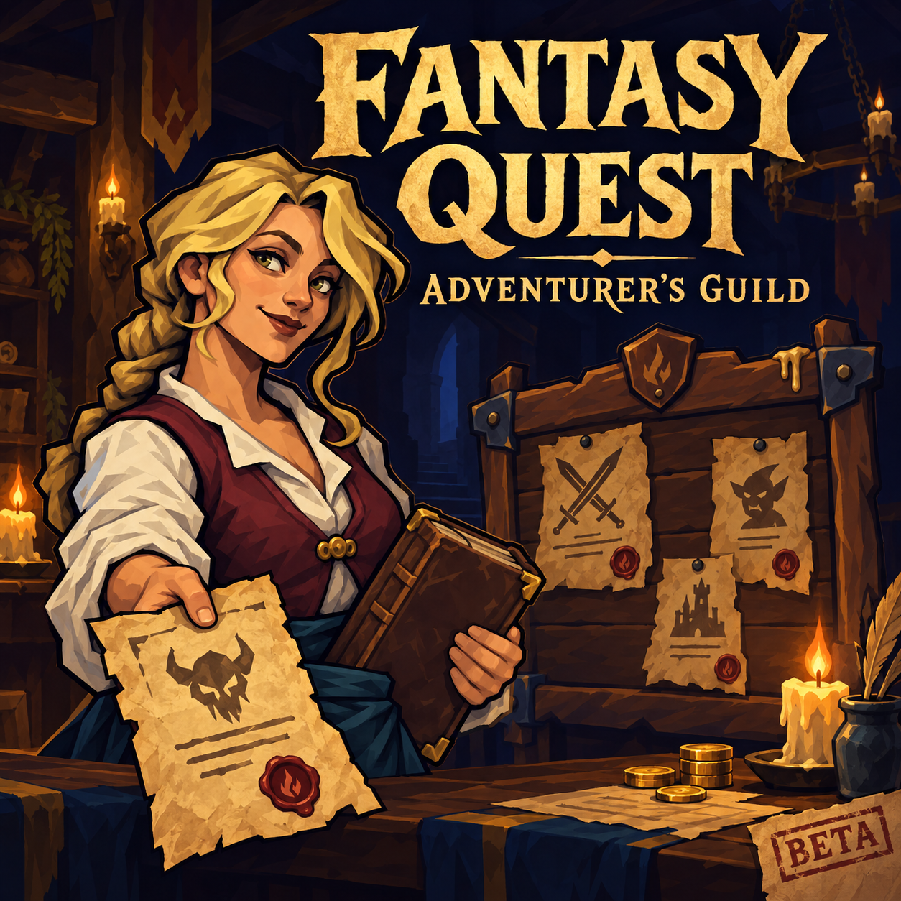
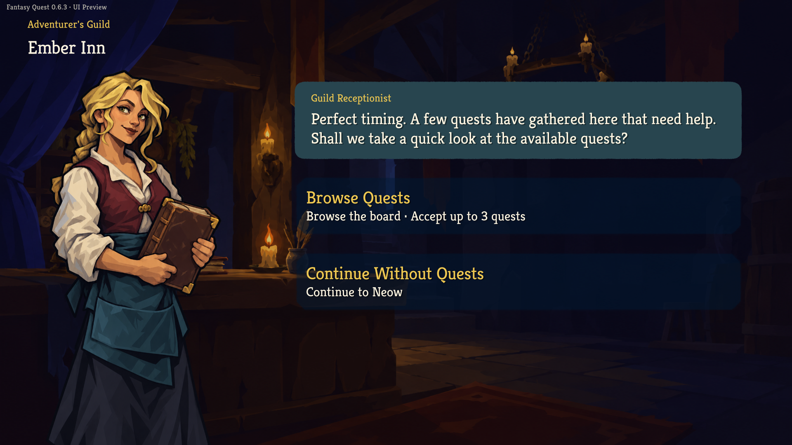
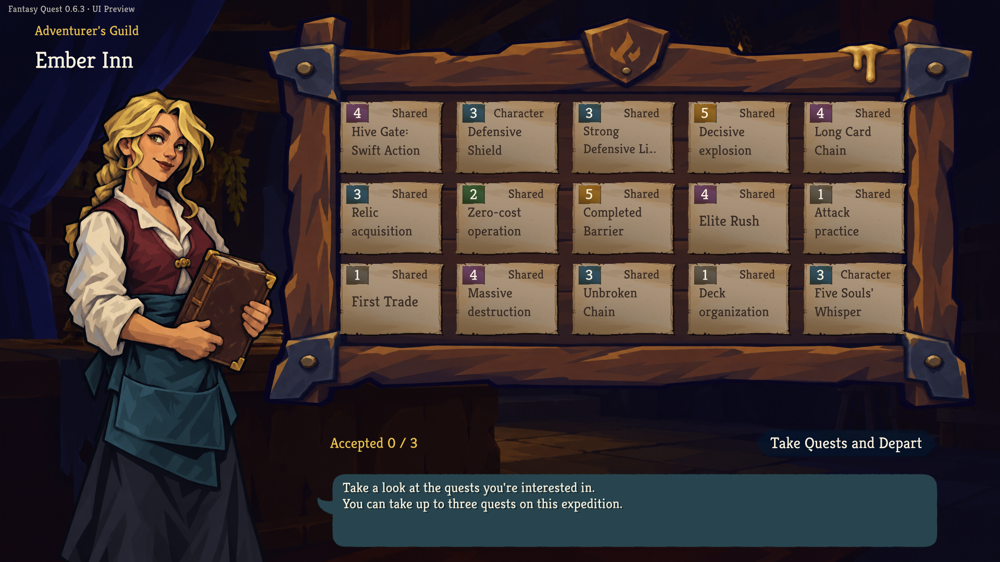
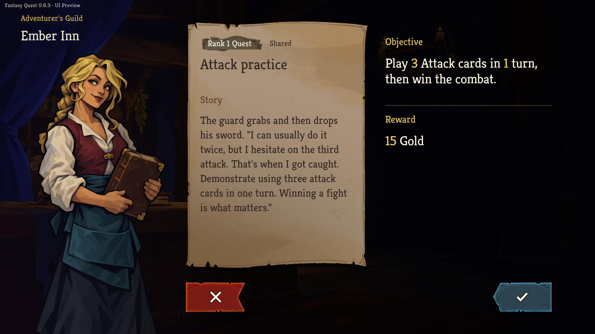
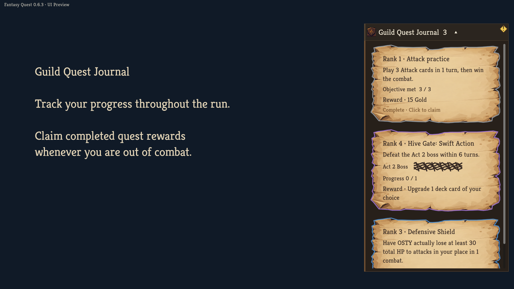

SLAY THE SPIRE 2 MOD · BETA
Fantasy Quest
Adventurer’s Guild
길드에서 의뢰를 맡고,
원정에 목표를 더하세요.
Slay the Spire 2에 모험가 길드와 의뢰를 추가하는 모드입니다. 니오우를 만나기 전에 의뢰를 고르고, 원정 중 조건을 달성해 보상을 획득할 수 있습니다.
베타 0.6.3 · 대상 게임 public-beta v0.111.0

167종공통·캐릭터 전용 의뢰
15개게시판에 제시되는 의뢰
최대 3개이번 원정에서 맡을 의뢰
HOW IT PLAYS
의뢰를 고르는 순간부터,
보상을 받기까지.
배포 UI를 예시 상태로 렌더링한 미리보기입니다.
사진을 누르면 원본 전체를 볼 수 있습니다.

니오우를 만나기 전에.
접수원을 만나 게시판을 열거나, 의뢰 없이 원정을 시작할 수 있습니다.

이번 원정의 의뢰를 선택하세요.
공통 의뢰와 현재 캐릭터의 전용 의뢰가 등장합니다. 최대 3개를 맡으며, 출발 전에는 선택을 취소할 수 있습니다.

사연과 조건, 보상을 함께.
의뢰서를 열어 달성 조건과 보상을 확인합니다. 전투 한 번의 목표부터 원정 전체의 누적 목표까지 구분합니다.

진행도를 확인하고 보상을 획득하세요.
원정 중 의뢰첩에서 목표와 진행도를 확인합니다. 완료한 의뢰의 보상은 전투 밖에서 받을 수 있습니다.
CURRENT STATUS
베타로 공개하고,
계속 다듬고 있습니다.
현재 공개 버전은 0.6.3입니다. 번역·UI·퀘스트 밸런스를 보완하고, 새로운 미지 이벤트 1개를 추가할 예정입니다.
- 대상 게임
- public-beta v0.111.0
build 24724944 기준 - 멀티플레이
- 지원 보완 중
참여자 모두 같은 모드 버전을 활성화해야 합니다. - 언어
- 한국어를 포함한 16개 언어
초기 베타 번역으로, 명칭과 표현을 검수 중입니다. - 의견과 버그 제보
- devgenie04@gmail.com ↗